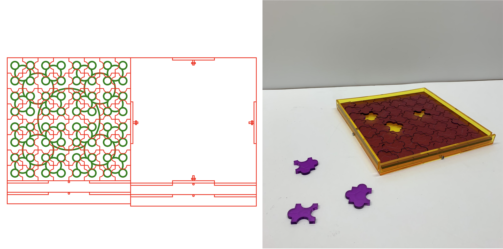
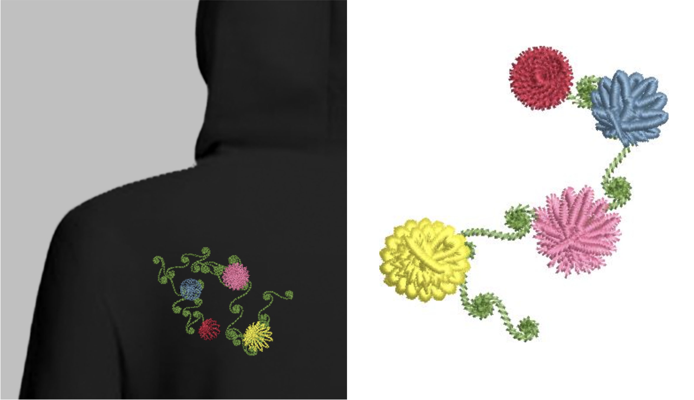
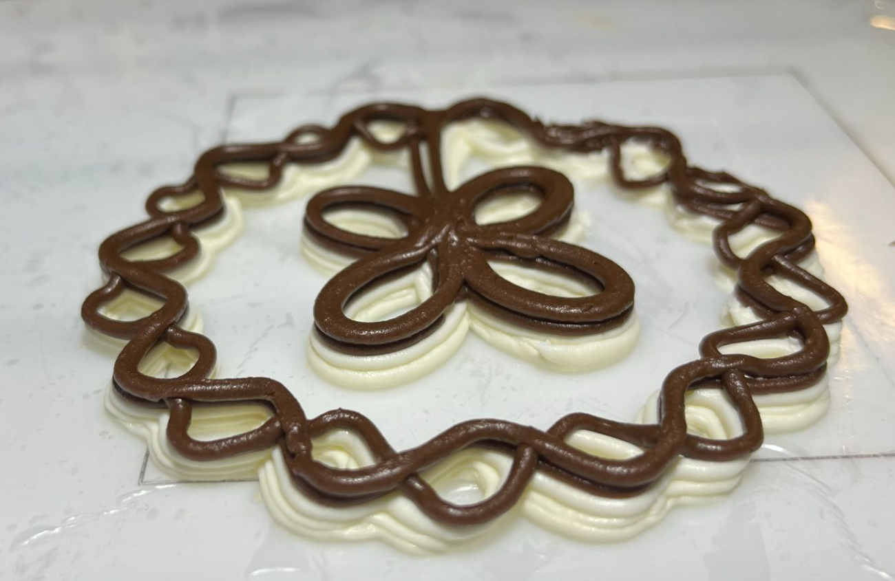

Home / Portfolio / Digital Manufacturing
Digital Manufacturing
Topology Optimization
Designed a lightweight robotic arm using Altair Inspire as an educational model to showcase how to perform Topology Optimization to improve mechanical designs.

Generative Design
Using code to generate designs for laser cutting, computerized embroidery, and additive food printing.
Auto-Generated Fractal Puzzles
Created a MATLAB script that takes in user inputs (dimensions, design parameters, size of stock) and outputs an SVG file encoding the instructions to laser cut a jigsaw puzzle.
A selection of fractals can be selected to raster onto the pieces, creating an almost impossible to decipher puzzle!

Auto-Generated Embroidery Patterns
Created a Python script that takes in user size and color parameters and generates a JEF file with a pattern of flowers. The JEF file encodes a stitching pattern to decorate a garment using a Computerized Embroidery Machine.
The designs are made using mathematical functions, with Euler Spirals as stems and parametric flowers.

Food Printing
Created a Python script that takes in user parameters and generates G-code for a food printer.
The designs can be used as decorative icing patterns for cookies and cakes.
